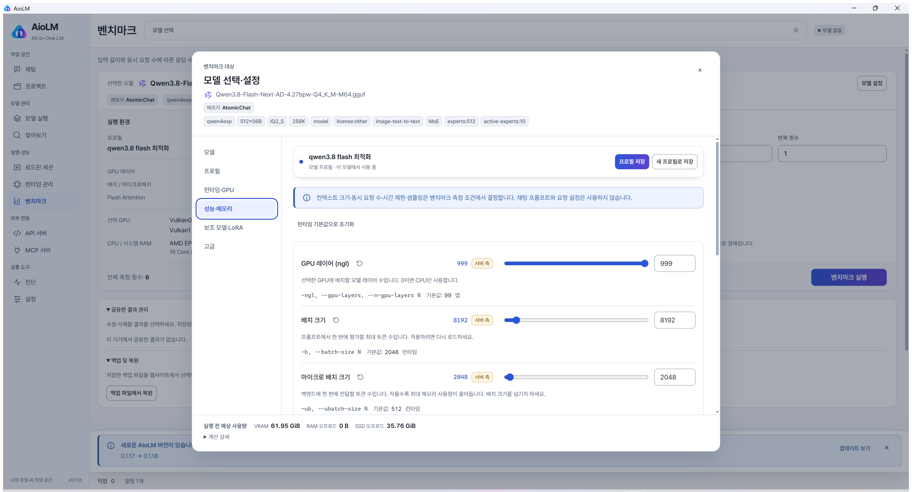
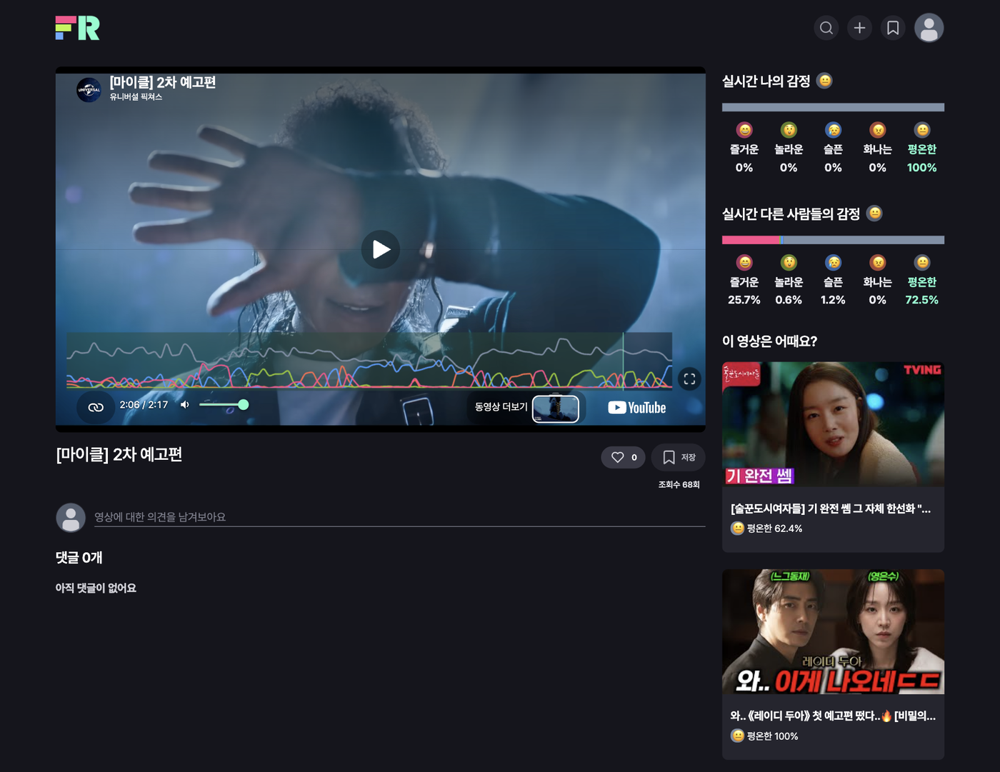

AI · Data
AX PoC
자연어 SQL · 로컬 오픈웨이트 LLM · Jira→PostgreSQL RAG
Next.js full-stack developer (주)커리어넷
로컬 LLM 기반 고객사 AX PoC와 산업 현장의 안전보건 B2B 정보시스템 개발에 참여했습니다. 사용자 경험과 접근성, 기술의 작동 원리, 검증 가능한 AI 활용을 중요하게 생각합니다.

Selectedevidence
AI · Data
AX PoC
자연어 SQL · 로컬 오픈웨이트 LLM · Jira→PostgreSQL RAG
Performance
약 20%
SafetyOne 도메인 전체 평균 서버 응답 시간 개선
Product
AioLM
로컬 LLM 실측 성능을 공유하는 데스크톱 앱과 웹사이트
01About
B2B 구축형 제품과 AI PoC를 오가며, 사용자에게 닿는 지점과 운영을 지탱하는 구조를 함께 고민해 왔습니다.
사용자 경험과 접근성, 기술의 작동 원리, 검증 가능한 AI 활용을 중심에 둡니다.
SafetyOne에서 고객사 요구에 맞춘 B2B 구축형 정보시스템을 개발했습니다. Next.js 풀스택으로 인증·권한·성능 문제를 다뤘고, Rust·WebAssembly로 기존 라이브러리로 해결하기 어려운 Excel 편집 기능을 사내 라이브러리로 만들었습니다.
고객사 AX PoC에서는 자연어를 SQL로 바꿔 내부 데이터를 조회하고, Jira에서 PostgreSQL로 옮긴 데이터를 RAG로 연결했습니다. 고객 데이터가 외부로 나가지 않도록 오픈웨이트 모델을 로컬에서 서빙했습니다.
AioLM에서는 로컬 LLM의 실측 성능을 기록·공유하는 데스크톱 앱과 웹사이트를 만들고 있습니다. 화면 너머의 데이터 흐름과 운영 제약까지 확인하는 편입니다.
How I work
01
접근성과 사용성을 기능 구현의 일부로 보고, 화면과 상태를 함께 설계합니다.
02
인증·성능·데이터 흐름이 실제로 어떻게 동작하는지 확인하고, 문제를 좁혀갑니다.
03
계획과 구조도 작성에 AI를 활용하되, 결과를 교차 검증하고 서비스에 적용합니다.
02Career
SafetyOne을 기반으로 고객사 요구에 맞춘 B2B 구축형 정보시스템을 개발했습니다. 인증·권한, 성능, 사내 라이브러리까지 제품 운영에 필요한 문제를 다뤘습니다.
Current role
Next.js 풀스택 개발자
2025.04 — 재직 중
SafetyOne은 산업 현장의 안전보건 관리 업무를 디지털화하는 솔루션입니다. 고객사 요구에 맞춘 B2B 구축형 정보시스템 개발에 주로 참여했습니다.
Focus 제품 개발 · 인증/권한 · 성능 최적화 · 내부 라이브러리
AI 오케스트레이션으로 구현 계획과 구조도를 작성하고, 모든 API의 권한을 확인하는 요청 검증 계층을 구현했습니다. 팀 리더와 보안·성능 설계를 논의하고 교차 검증 후 적용했습니다.
Outcome서비스 적용 후 오류 미발생
개발·커밋 컨벤션을 정립하고 Rules와 Agent Skills 도입을 주도했으며 MCP 등 AI 도구를 활용했습니다. 오류 가능성과 AI 토큰 낭비를 줄이는 구조를 마련했습니다.
Outcome팀 생산성과 코드·변경 이력 가독성 개선
Kotlin·Swift에서 전달한 JWT를 Next.js 서버에서 검증하고 HttpOnly Cookie 세션으로 전환했습니다. Redis 중복 로그인 검증을 서버사이드 세션 흐름으로 이관했습니다.
Outcome토큰 노출 축소 · 서버 인증 일원화
ExcelJS·XLSX로 해결하기 어려운 Excel 편집 요구를 Rust로 구현하고 WebAssembly로 빌드했습니다. JS 헬퍼와 TypeScript 타입을 제공하는 사내 라이브러리로 정리했습니다.
Outcome영업 시연과 고객사 유치에 기여
nginx 설정을 점검하고 HTTP/1.1에서 HTTP/2로 전환했습니다. 정적 리소스 전송과 서버 응답 흐름을 개선했습니다.
Outcome도메인 전체 평균 서버 응답 시간 개선
React에서 사용하기 어려운 외부 SDK를 공통 컴포넌트로 래핑했습니다. useRef·forwardRef로 편집 상태를 유지하고, SDK 타입과 유틸 함수를 분리했습니다.
OutcomeReact에 익숙하지 않은 팀원도 안정적으로 사용
OAuth 2.0 표준 흐름을 기반으로 서비스 간 인증 유지 구조를 설계했습니다. NextAuth 기반 로그인을 확장해 redirect URI와 authorization code를 전달하고, 다른 서비스에서 JWT를 발급받을 수 있도록 구성했습니다.
Outcome서비스 간 인증 흐름 확장
03Selected work
고객사 PoC, B2B 제품, 개인 프로젝트에서 맡은 역할과 기술적 판단, 확인된 결과를 정리했습니다.
Case 01
고객사 AX PoC
비개발자가 고객사 내부 데이터를 자연어로 조회할 수 있도록, 질문을 SQL로 바꾸고 로컬 LLM과 RAG를 연결한 PoC에 참여했습니다.
What I did
Stack
Case 02
B2B 구축형 제품
SafetyOne은 산업 현장의 안전보건 관리 업무를 디지털화하는 솔루션입니다. 고객사 요구에 맞춘 B2B 구축형 정보시스템 개발에 주로 참여했습니다.
What I built
01 / Auth
모든 API 권한 검증
서비스 적용 후 오류 미발생
02 / Security
WebView 인증 전환
토큰 노출 축소 · 서버 인증 일원화
03 / Library
Rust · WebAssembly
영업 시연과 고객사 유치에 기여
Stack
Case 03
개인 프로젝트
로컬 LLM의 실측 성능을 공유해 기기 구매와 실행 환경 선택을 돕는 데스크톱 앱과 웹사이트입니다. 기획부터 앱·웹 개발, 데이터 스키마까지 개인 프로젝트로 만들고 공개했습니다.
What I built
Actual app screens


Released
Windows 데스크톱 앱과 벤치마크 웹사이트 공개 · 두 저장소의 소스 코드 공개·유지보수
Benchmark
입력 길이·동시 요청 수별 TTFT·생성 속도·프로세스 RAM과 실행 환경을 기록합니다.
Compare
모델·하드웨어·환경으로 필터링하고 최대 3개를 비교합니다. 측정 방식이나 부하가 다르면 안내합니다.
Ownership
복구 코드·파일 또는 앱에서 웹으로 이어지는 일회성 연결로 설명을 수정하거나 삭제합니다.
Stack
04Projects
팀 프로젝트에서 맡은 역할과 검증된 결과만 간단히 정리했습니다.

웹캠 표정을 다섯 감정으로 분석해 시청 반응과 영상 추천으로 연결한 서비스입니다.
Result2023 세종대학교 제16회 창의설계경진대회 대상 · facereview.net 배포

NBA 경기의 실시간 문자 중계와 경기별 채팅을 함께 제공하는 플랫폼입니다.
Result실시간 중계·경기별 채팅·인증을 포함한 서비스를 기획부터 배포까지 완료

하루의 감정을 기록하고 그 흐름을 시각화해 돌아보는 일기 서비스입니다.
ResultLighthouse 모바일 50~60점대 → 80~90점대, 데스크톱 70~80점대 → 90점대 후반
05Capabilities
프로젝트에서 실제로 사용한 기술입니다. 프레임워크 사용법을 넘어 인증·성능·데이터 흐름을 이해하려고 노력합니다.
Frontend
TypeScript · React · Next.js · TanStack Query · Zustand · Sass · Tailwind CSS · 웹 접근성 · 반응형 UI
Backend · Data
Node.js · PostgreSQL · nginx · Socket.IO · Rust · WebAssembly
AI · Workflow
MCP · Agent Skills · 로컬 LLM · RAG · llama.cpp
협업 도구 — Git · GitHub · Notion · Figma
06Writing
실무에서 부딪힌 문제를 정리했습니다. HTTP/2 전환과 React 접근성 구현을 다뤘습니다.
07Contact
채용 제안이나 협업 관련 문의는 이메일로 보내주세요. GitHub와 Velog에서 작업 기록을 더 볼 수 있습니다.